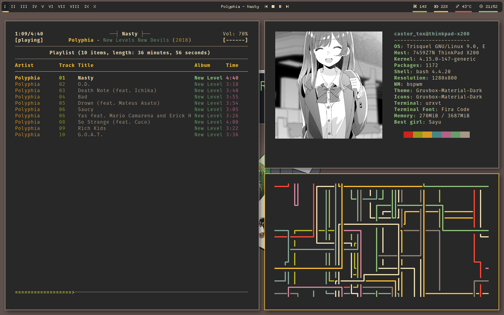

So, these are my gruvbox Dotfiles. The dotfile repository is unfinished at the moment because I accedentally deleted my home directory the other day, but you can still look at some of the images.
My dotfiles are currently running on trisquel GNU+Linux and they are currently being reproduced. However, if you want the current version, you can clone the repo. When I finish, I will update this post.

My new dotfiles have been pushed onto github! They look pretty similar to the old one, but unfortunately, I could not find the wallpaper. My emacs config requires you to manually install everything I require instead of use-package. Also, it uses the default emacs keybindings, which are better than the evil mode keybindings (hot take, I know, especially since some people think default emacs keybindings will give you "emacs pinky". Who knows, maybe they're correct).
